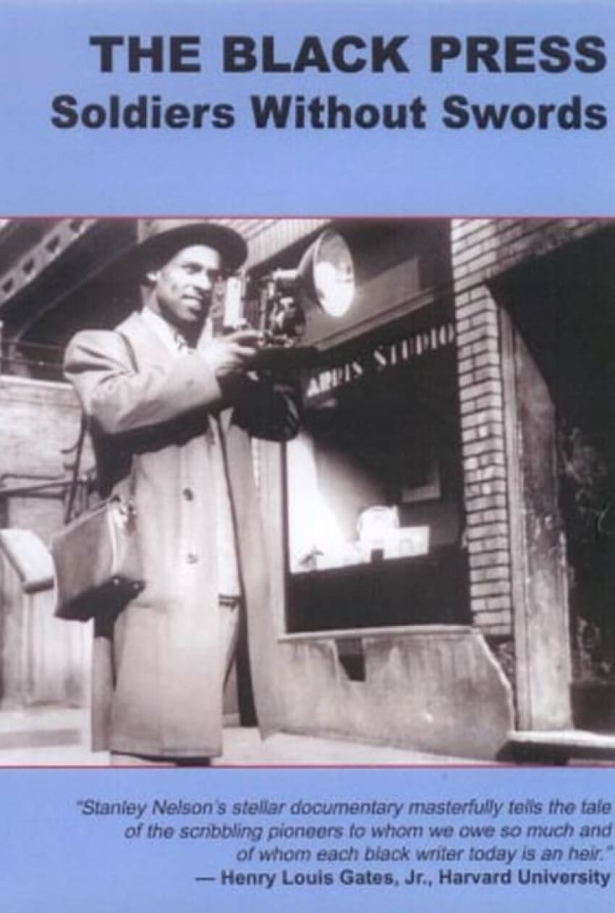

Back to Timeline
The Black Press (1999)
About the Film
Spanning 170 years of American History, Stanley Nelson Jr.’s documentary The Black Press details the role of African American-operated newspapers as voices for their communities, spreading important news, events, and achievements in a time when mainstream media did not represent them.
Many of these papers were underfunded and relied heavily on circulation and readership. However, not being sponsored through advertisements from major companies allowed the papers to report on the topics they wanted. These papers were admittedly biased because they recognized the prejudice within white-operated newspapers and wanted to focus on the Black stories not being told by these sources. Despite financial burdens and public pushback, Black newspapers pushed forward, although many failed to find readership, several papers like The Chicago Defender and The Pittsburgh Courier had a large impact, reaching far beyond their home cities. They helped to unite Black communities across the country and were an instrumental part of major events such as The Great Migration and the Civil Rights Movement.
Journalistic Themes
- Publishers, alongside reporters, as activists: Frederick Douglass of The North Star, Charlotta Bass of The California Eagle, Robert S. Abbott of The Chicago Defender, Robert Lee Vann of The Pittsburgh Courier.
- Whose stories deserve to be told, and the role the press has in activism and raising awareness for certain causes
- Intentional bias/slant: Black papers were “A Press of Advocacy,” highlighting Black excellence rather than creating a neutral paper as a reaction to the intentional prejudice in White papers
- Internal bias: Black Americans’ negative portrayal in mainstream media (unequal representation in stories, racist stereotyping) vs. positive portrayal in Black American-operated newspapers (History lessons of important Black figures, cartoons with Black heroes, reporting on Black achievement, Black college degrees, etc.)
- Being able to, or at least willing to, tell stories from a first-hand perspective vs. only approaching stories of a community from the outside
- Black Journalists as Celebrated Members of their communities
Historical Context
- Was first broadcast during Black History Month in 1999
- Theme of month (designated by US gov) for that year was recognizing African American leadership
- Drawing strength and inspiration from past figures to face current challenges
- Revealed history of Black journalism that was not well-known or talked about as much during that time
- Paid tribute to pioneering Black journalists that created a space for Black stories in the media
- Showcased legacy of Black papers like The Chicago Defender and how they laid the groundwork for more recent Back journals.
- Also reinforces idea that Black journalism was not mainstream and many Black experiences were not highly publicized
- Ties into current struggles within journalism for minorities
- Minorities today face similar challenges despite progress
- Unequal pay
- Underrepresentation
- More support for mainstream (white) media and papers
Related Film: Spotlight
- Highlighting stories that had gone underreported in media
- Reporters on the Spotlight team fought against well-established institution, the Catholic Church
- Worked to reveal long-time practices of abuse that powerful figures helped to cover up
- Reporters for the Black Press challenged the US as a whole
- Addressed issue of institutional and perpetuated racism across country
Contrasting Film: All the President's Men
- Portrays journalists as heroes in a different way
- Both show the use of media to accomplish positive change, but with different intentions
- Woodward and Bernstein worked unceasingly to uncover the truth about conspiracy
- Fought against government forces
- Early Black reporters and publishers worked to spread a truth that was hidden by racism
- Went against ideals and prejudices of the entire nation